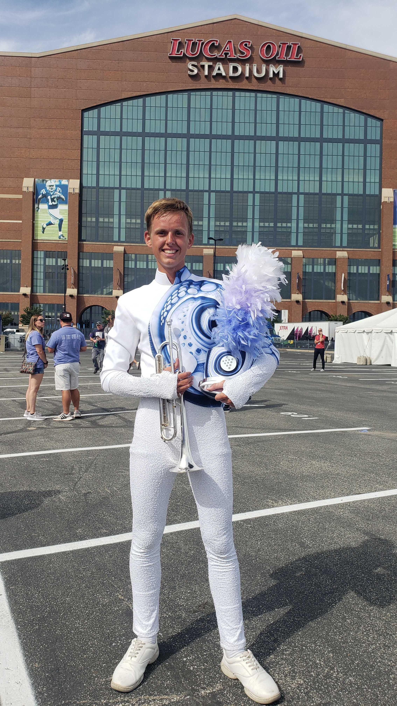

First HTML Page
About Me:
Name:
Garrett Biwer

Email:
biwerg@oregonstate.edu
Major:
Computer Science
Questions:
-
I have no major web development experience. I have done a little bit of HTML and created small web pages, like this, but nothing more than that.
-
I hope to learn how to create good quality web pages that I can apply to my career in the future. Being able to create an easy to read and asthetically pleasing page is very important in the modern world. Everything is online and poorly designed web page is all it takes to deter a possible customer, client etc.
-
I have signed up on Campuswire
-
Over the summer I was a part of a group that toured the country and performed. The group was The Blue Knights and they are a drum a bugle corps (essentially a competitve marching band). The group I was a part of is a world class group and is one of the best in the world. I spent 2.5 months of my summer rehearsing 12+ hours a day outside in the sun, sleeping on buses and gym floors, and touring in over 20 states.